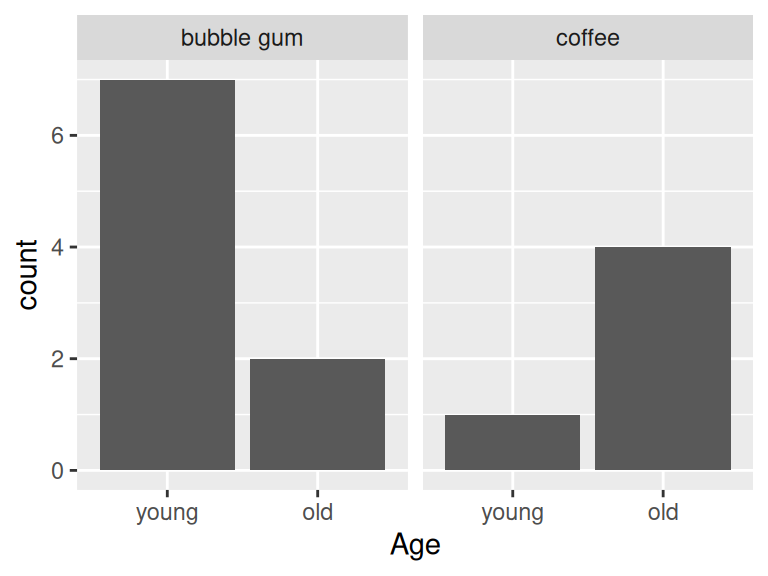
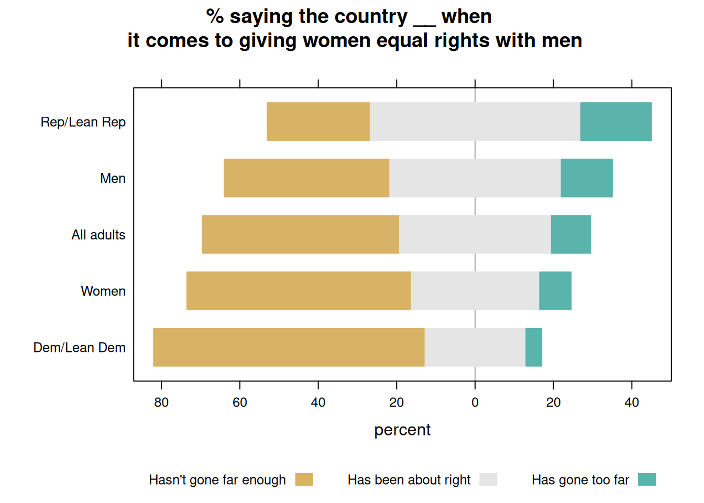

Chapter 13 Multidimensional categorical variables
In this chapter, we will focus on multivariate categorical data. Here, it is noteworthy that multivariate plot is not the same as multiple variable plot, where the former is used for analysis with multiple outcomes.
13.1 Barcharts
Bar chats are used to display the frequency of multidimensional categorical variables. In the next few plots you will be shown different kinds of bar charts.
13.1.1 Stacked bar chart
library(ggplot2)
library(dplyr)
library(tidyr)
cases <- read.csv("data/icecream.csv")
icecreamcolors <- c("#ff99ff", "#cc9966") # pink, coffee
ggplot(cases, aes(x = Age, fill = Favorite)) +
geom_bar() + scale_fill_manual(values = icecreamcolors)
13.1.2 Grouped bar chart
Use position = "dodge" to create grouped bar chart
ggplot(cases, aes(x = Age, fill = Favorite)) +
geom_bar(position = "dodge") +
scale_fill_manual(values = icecreamcolors)
13.1.3 Grouped bar chart with facets
ggplot(cases, aes(x = Age)) +
geom_bar(position = "dodge") +
facet_wrap(~Favorite)
13.1.4 Grouped barchart with three categorical variables
counts3 <- cases %>%
group_by(Age, Favorite, Music) %>%
summarize(Freq = n()) %>%
ungroup() %>%
complete(Age, Favorite, Music, fill = list(Freq = 0))
ggplot(counts3, aes(x = Favorite, y = Freq, fill = Music)) +
geom_col(position = "dodge") +
facet_wrap(~Age)
13.2 Chi square test of independence
In this section, we would like to show how to use chi-square test to check the independence between two features.
We will use the following example to answer: Are older Americans more interested in local news than younger Americans? The dataset is collected from here.
local <- data.frame(Age = c("18-29", "30-49", "50-64", "65+"),
Freq = c(2851, 9967, 11163, 10911)) %>%
mutate(Followers = round(Freq*c(.15, .28, .38, .42)),
Nonfollowers = Freq - Followers) %>%
select(-Freq)
knitr::kable(local[,1:2])| Age | Followers |
|---|---|
| 18-29 | 428 |
| 30-49 | 2791 |
| 50-64 | 4242 |
| 65+ | 4583 |
The chi-square hypothesis is set to be:
Null hypothesis: Age and tendency to follow local news are independent
Alternative hypothesis: Age and tendence to follow local news are NOT independent
localmat <- as.matrix(local[,2:3])
rownames(localmat) <- local$Age
X <- chisq.test(localmat, correct = FALSE)
X$observed## Followers Nonfollowers
## 18-29 428 2423
## 30-49 2791 7176
## 50-64 4242 6921
## 65+ 4583 6328X$expected## Followers Nonfollowers
## 18-29 984.1065 1866.893
## 30-49 3440.4032 6526.597
## 50-64 3853.2378 7309.762
## 65+ 3766.2526 7144.747X##
## Pearson's Chi-squared test
##
## data: localmat
## X-squared = 997.48, df = 3, p-value < 2.2e-16We compare observed to expected and then the p-value tells that age and tendency are independent features. We are good to move on to next stage on mosaic plots.
13.3 Mosaic plots
Mosaic plots are used for visualizing data from two or more qualitative variables to show their proportions or associations.
13.3.1 Mosaic plot with one variable
library(grid)
icecream <- read.csv("data/MusicIcecream.csv")
icecreamcolors <- c("#ff99ff", "#cc9966")
counts2 <- icecream %>%
group_by(Age, Favorite) %>%
summarize(Freq = sum(Freq))
vcd::mosaic(~Age, direction = "v", counts2)
13.3.2 Mosaic plot with two variables
vcd::mosaic(Favorite ~ Age, counts2, direction = c("v", "h"),
highlighting_fill = icecreamcolors)13.3.3 Mosaic plot with three variables(Best practice)
Here’s some criteria of best practice of mosaic plots :
Dependent variables is split last and split horizontally
Fill is set to dependent variable
Other variables are split vertically
Most important level of dependent variable is closest to the x-axis and darkest (or most noticable shade)
vcd::mosaic(Favorite ~ Age + Music, counts3,
direction = c("v", "v", "h"),
highlighting_fill = icecreamcolors)
13.3.4 Mosaic pairs plot
Use pairs method to plot a matrix of pairwise mosaic plots for class table:
pairs(table(cases[,2:4]), highlighting = 2)
13.3.5 Mosaic plots: spine plot
Spine plot is a mosaic plot with straight, parallel cuts in one dimension (“spines”) and only one variable cutting in the other direction.
library(vcdExtra)
library(forcats)
foodorder <- Alligator %>% group_by(food) %>% summarize(Freq = sum(count)) %>%
arrange(Freq) %>% pull(food)
ally <- Alligator %>%
rename(Freq = count) %>%
mutate(size = fct_relevel(size, "small"),
food = factor(food, levels = foodorder),
food = fct_relevel(food, "other"))
vcd::mosaic(food ~ sex + size, ally,
direction = c("v", "v", "h"),
highlighting_fill= RColorBrewer::brewer.pal(5, "Accent"))
13.3.6 Mosaic plot: tree map
Treemap is a filled rectangular plot representing hierarchical data (fill color does not necessarily represent frequency count)
library(treemap)
data(GNI2014)
treemap::treemap(GNI2014,
index=c("continent", "iso3"),
vSize="population",
vColor="GNI",
type="value",
format.legend = list(scientific = FALSE, big.mark = " "))13.4 Alluvial diagrams
Alluvial diagrams are usually used to represent the flow changes in network structure over time or between different levels.
The following plot shows the essential components of alluvial plots used in the naming schemes and documentation (axis, alluvium, stratum, lode):

13.4.1 ggalluvial
library(ggalluvial)
df2 <- data.frame(Class1 = c("Stats", "Math", "Stats", "Math", "Stats", "Math", "Stats", "Math"),
Class2 = c("French", "French", "Art", "Art", "French", "French", "Art", "Art"),
Class3 = c("Gym", "Gym", "Gym", "Gym", "Lunch", "Lunch", "Lunch", "Lunch"),
Freq = c(20, 3, 40, 5, 10, 2, 5, 15))
ggplot(df2, aes(axis1 = Class1, axis2 = Class2, axis3 = Class3, y = Freq)) +
geom_alluvium(color='black') +
geom_stratum() +
geom_text(stat = "stratum", aes(label = paste(after_stat(stratum), "\n", after_stat(count)))) +
scale_x_discrete(limits = c("Class1", "Class2", "Class3"))
You can choose to color the alluvium by different variables, for example, the first variable Class1 here:
ggplot(df2, aes(axis1 = Class1, axis2 = Class2, axis3 = Class3, y = Freq)) +
geom_alluvium(aes(fill = Class1), width = 1/12) +
geom_stratum() +
geom_text(stat = "stratum", aes(label = paste(after_stat(stratum), "\n", after_stat(count)))) +
scale_x_discrete(limits = c("Class1", "Class2", "Class3"))
13.4.2 geom_flow
Another way of plotting alluvial diagrams is using geom_flow rather than geom_alluvium:
ggplot(df2, aes(axis1 = Class1, axis2 = Class2, axis3 = Class3, y = Freq)) +
geom_flow(aes(fill = Class1), width = 1/12) +
geom_stratum() +
geom_text(stat = "stratum", aes(label = paste(after_stat(stratum), "\n", after_stat(count)))) +
scale_x_discrete(limits = c("Class1", "Class2", "Class3"))
After we use geom_flow, all Math students learning Art came together, which is also the same as Stats students. It makes the graph much clearer than geom_alluvium since there is less cross alluviums between each axises.
13.5 Heat map
Besides what have been systematically introduced in Chapter 9.2 Heatmaps, this part demonstrated a special case of heat map when both x and y are categorical. Here the heat map can been seen as a clustered bar chart and a pre-defined theme is used to show the dense more clearly.
library(vcdExtra)
library(dplyr)
theme_heat <- theme_classic() +
theme(axis.line = element_blank(),
axis.ticks = element_blank())
orderedclasses <- c("Farm", "LoM", "UpM", "LoNM", "UpNM")
mydata <- Yamaguchi87
mydata$Son <- factor(mydata$Son, levels = orderedclasses)
mydata$Father <- factor(mydata$Father,
levels = orderedclasses)
mydata3 <- mydata %>% group_by(Country, Father) %>%
mutate(Total = sum(Freq)) %>% ungroup()
ggplot(mydata3, aes(x = Father, y = Son)) +
geom_tile(aes(fill = (Freq/Total)), color = "white") +
coord_fixed() +
scale_fill_gradient2(low = "black", mid = "white",
high = "red", midpoint = .2) +
facet_wrap(~Country) + theme_heat